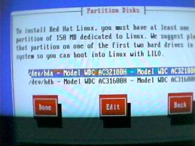

Lesson 2: Installing Red Hat Linux - Part 1
Red Hat Installation Walk Through
Fig 1.0: Initial Boot Screen
Once your system boots, you will be greeted with the initial boot screen. From here you can choose to read information of the rescue disk (F4), switch to expert mode (F3) or while on the Initial Boot Screen (F1) press ENTER (RETURN)to start the installation.
Fig 1.1: Boot Image Loading...
Depending on your system, it may take a few seconds to a few minutes for the boot process to completely load. You may be greeted with something similar to fig 1.1.
Fig 1.2: Red Hat Linux Welcome Message
Next you will be greeted with a screen similar to the one in Fig 1.2. Simply press ENTER (RETURN) to continue the installation process.
Fig 1.3: Language Selection
The next stage of the installation process is the selection of the default language. In general you will want to select ENGLISH unless you are building or customizing a system for use in a foreign country. There is plenty of support for most European languages including French, German, Hungarian, Italian and Italian.
Fig 1.4: Installation Method
If you chose to use the bootnet image and do an NFS or FTP installation the screenshot in Fig 1.4 will give you slightly different options. It is possible to install Linux from a Hard Disk partition, however the CD method is much more practical and will be the one we follow in this manual.
Fig 1.5: Installation Class
Red Hat provides three classes of installation, Workstation, Server and Custom. Workstation will by default select predetermined packages that are required to install Red Hat Linux for use as a Linux Workstation, generally this includes X, and most of the components required to run GUI applications. Server will install packages that are required to run a general purpose Linux Server. While these are sometimes useful for generic Linux installations, you have better control over what is installed by using the Custom class of installation. Custom allows you full control over what is installed and is simple enough to control. This stage of the installation is when you need to decide what the purpose of your Linux box is going to be. You need to determine if the machine is going to be used as a Linux Workstation for an office worker to surf the internet, send email and run office type applications, or is it going to be a Linux Server acting as a firewall, proxy and mail server. If you are going to install Linux in a production environment connected to the Internet or with remote network access, it is quite possible that the version of Red Hat Linux you have on CD is outdated. If you think that it is, you may wish to visit www.redhat.com to see what the current release is. If you are running the latest release (currently 6.0) you should probably check updates.redhat.com via ftp for updated packages. The best option for a production server is to install the basic components and download the latest versions of the services (such as apache, bind (dns server) and sendmail). This will ensure that older (and perhaps insecure) versions of critical services are not installed on the system. For the purpose of this lesson select Custom.
Fig 1.6: Installation Path
Red Hat Linux 6.0 is probably the first Red Hat distribution where the Upgrade path from Red Hat 5.x actually works correctly. If you are upgrading a previous Linux system, you can either try the system upgrade, or simply backup your critical data and install the latest version of Red Hat freshly. Since we will assume this is a fresh install you will need to select Install.
Fig 1.7: SCSI Configuration
If you are installing Linux onto a system that only has SCSI drives or a system that has SCSI and IDE drives you may wish to select your SCSI adapter. This is one of the reasons you needed to collect information regarding your system before you started the installation. If you wish to use SCSI drives to install Linux select YES at this stage and choose your SCSI adapter from the list, if your SCSI adapter is not listed you may need to check the documentation with your card to see if there is a compatible driver. Some SCSI vendors use NCR7xxxx based chipsets in their SCSI adapters, most cards with that particular chipset will work with the NCR driver in Linux. It may be a benefit to look at your SCSI adapter while you are building your system, or with a pre-built system it may be wise to remove the SCSI adapter if you believe it may not be completely supported. Look at the chips on the card as the chipset maybe supported in the installation, most cards will work on just the chipset support. Finally you may wish to visit the updates.redhat.com ftp site and obtain the latest boot images, these are regularly updated to include updated drivers. If you are a system vendor using a new SCSI adapter it may be helpful to have a long supported SCSI card such as a Buslogic or Adaptec card to install Linux on new systems. You can than replace the supported card once Red Hat is installed and you have constructed a later kernel with support for your newer card.
Fig 1.7: Disk Setup
Next you will be presented with the disk setup screen. There are two means of partitioning disks in Red Hat, Disk Druid or FDISK. FDISK is generally a more informative method of partitioning your system and will be the method we will use here. Select fdisk using the arrow keys and press ENTER (RETURN).

Fig 1.8: Partition Disks
Next you will be presented with a list of drives in your computer. IDE drives will be listed as /dev/hdx where x is a letter a,b,c or d. The letters a and b are on the primary IDE interface, and c and d are on the secondary IDE interface. The first letter is the master and the second is the slave on each interface. If you have a scsi drive, they are listed as /dev/sdx where x is a letter. Depending on the number of SCSI drives in your system the letters will differ. The letters are not tied to the SCSI ID of the devices. In figure 1.8 you can see that there are two IDE drives in this system, the first /dev/hda is a Western Digital IDE drive, as is /dev/hdb. If you wish to partition multiple drives you will need to highlight the drive, then use TAB to selected it. You will then be presented with the fdisk prompt (see below). Once you have completed the partitioning you can move onto the next drive by selecting it and choosing edit again. Once you have completed partitioning each of your drives select DONE.
Fig 1.9: Initial FDISK Screen
As you can see in figure 1.9, you will be presented with the standard fdisk welcome message informing you of which drive you are editing. You can simply press m for a menu of commands. In the above screenshot you can see that we have pressed P to display a list of current partitions. If you are using a brand new drive you will see that there are no partitions, and existing system may have existing DOS partitions. If you are using this manual as part of a training course at a training facility you will now need to check with your instructor for instructions on partitioning your workstation. Many training facilities have active Windows and Linux partitions on each station and may not wish to have the Windows partition destroyed.

Fig 1.10: FDISK Device List
You can use the N command to create a new partition, this is discussed in detail below. Remember to press ENTER (RETURN) after each command in order for the command to be executed. You can also use the command D to delete partitions.
Linux Partitions are listed by device with a start sector, end sector, size of partition and type of partition. Linux boot partitions must be within the first 1024 sectors. Linux requires two partitions, a swap partition (used like the Windows swap file for virtual memory) and a root partition. If you have a large drive, such as a 8Gb or larger, you will find that the drive has more than 1024 sectors. The swap partition and the start of the root partition must be before 1024, this is a limitation of the PC BIOS. If you encounter a Linux system that displays only LI of the initial LILO boot prompt there is a good chance that the root partition exists past the 1024th sector, in that case the best method is to reinstall or if re-installation is not an option, booting from a boot floppy is also possible. To get around the sector problem it is best to create the swap partition first. Swap should be at least twice your memory (up to 128Mb or 256Mb depending on your kernel version). Your root partition must begin before sector 1024. This can sometimes be a problem with dual boot machines, as your Windows partition also needs to be before 1024. The best method to use in that case is to create a 600Mb root partition, and another partition for /usr and /home. Only the Linux root partition needs to be in the first 1024 sectors (for boot purposes). Most of the Linux operating system is installed in /usr or user files in /home. These are the partitions you will need the most space for. Since they are not the root partition, there is no need for them to exist within the first 1024 sectors. Once you have determined how you wish to partition the drive you need to use FDISK to make those changes.
Figure 1.11: Creating a partition
To create a new partition, simply press N. This will present you with a menu to create either an extended or primary partition. If you have a large disk, and intend on using more than four partitions, including swap, then you will need to create an extended partition. For the purpose of this lesson we will be creating only two partitions. Press P to create a primary partition.
Next you will be asked to enter the partition number, there can be four primary partitions, simply enter 1 and ENTER here. FDISK will then ask for the first cylinder, simply enter 1 here. Next you will be asked for the last cylinder. Rather than trying to determine the exact cylinder number, simply enter +64M. This will create a partition of 64Mb. This partition will be used for swap, if you are using a 2.2 or later kernel, then this can be any size you want. It is generally a good idea to make swap equal to the amount of memory in the machine, if you have less than 64Mb, make it four times the amount of memory you have.
Press P to see that the partition has been created. As you will see the partition will be Linux Native. We need to change this to Linux Swap. You can easily do this in fdisk by using the type command, press T. You will now be prompted for the partition type hex code, you can press L to get a list of partitions. The hex code for Linux Swap is 82, enter 82 and press enter. Now press P again and you should see that the first partition is Linux Swap.
Now we need to create the primary Linux partition, consult with the instructor as they may wish you to use a specific partition structure. To create the primary Linux partition, simply press N. Once again press P for the primary partition, but this time enter 2 and enter for the partition number. Since this partition needs to be Linux Native we do not need to change the type.
The above figures show the elements of the partition list. As you can see each partition is on the first IDE drive (/dev/hda) the partition number is added to the end of the disk identifier. Each entry lists the starting and ending cylinders and blocks gives you an indication as to the size of each partition. You can press V to verify that there is no unpartitioned space on the disk. If you are satisfied that the partitioning is completed, press W to write the changes. You should see something similar to the output in the last
figure.
Note on disk labels
While Linux on Intel hardware does not require the use of disk labels, Linux partitions on Apple, Sun and some other hardware platforms require the creation of disk labels. Sun hardware is the most notable. A disk label is special partition entry that contains the entire disk. If you are partitioning a Sun, Apple or another platform, please consult the relevant documentation and create the appropriate disk label. Once the disk label is created, creation of partitions continues as normal.
Figure 1.13: Editing Mount points
The next task will be to use disk druid to specify which partitions are assigned to which mount points. Think of a mount point as instead of having another drive letter specifying a new drive, that a directory and everything below that directory represent the files on that partition.
Simply select the drive and choose EDIT. When you choose to edit a drive you will be presented with a list of partitions at the top of the window, simply use the arrows to select your primary root partition, and select EDIT. This will present you with the new window in the right image in figure 1.13. In the mount point box simply enter /. Then select OK. Now choose DONE and proceed to the next section. You may wish to consult with your instructor as they may add some additional information now.
Figure 1.14/1.15: Formatting Swap
Next you will be asked to format the swap partition, if this is a new system you will want to also select the Check for Bad Blocks as this will help uncover any hardware disk problems with new drives.
Figure 1.15 shows a screenshot of the Swap Formatting Progress, you should see something similar.
Figure 1.16: Formatting Partitions
Depending on the number of partitions you created, you will be presented with another window listing each partition. Once again, make sure each partition in selected, and make sure to Check for bad blocks. If you are doing an FTP install over a slow connection you may wish to choose to skip the Check for Bad Blocks, especially if you have a slow system that may take too long to format the partition. This would result in your ftp session from timing out. The mount point of each partition is listed next to the partition device name.
Figure 1.17: Choosing Packages
The next window (Figure 1.17) allows you to select the components you wish to install. Package groups are listed by their subject to make selection of components easier.
Use the ARROW keys to move up or down the list and then the SPACE BAR to either select or deselect components.
If you select the Select Individual Packages option, you will be able to select or deselect individual packages (the particular pieces of software that make up the components) that are installed. This option is for experience users who know exactly what they require for their Linux system.
If you wish to install everything, select the Everything component.
Word of advice:
It is vital that you know what the purpose of the Linux system will be at this stage of the install. If you are simply installing Linux to experiment with, it maybe best to simply install EVERYTHING. If you are installing a web or proxy server, the best option is to deselect most items, except Development libraries and Extra documentation. Choosing select individual packages for server installs is vital as you can remove packages that are not required for the proxy or server, while making sure that advanced options are added.
Figure 1.18: Individual Selection
For the purpose of this lesson, make sure you select Choose Individual Packages and continue. This may take some time, but at this point of the install you should familiarize yourself with each of the packages. You can press F1 or select HELP when you have highlighted a particular package to learn what it does. We recommend that you take the time to go through each package and read what each package does. Your instructor may choose to point out the most important packages related to your business needs.

Figure 1.19: Module Dependencies
If you select a particular package that requires another package or library installed that you haven't selected it will be listed in an extra window when you select DONE. Simply make sure the install module dependencies option is selected and continue.

Figure 1.20: Install Log Notification
The installer will now advise you that a log of the installation will be stored in /tmp. If there is a problem with the CD or FTP server you are doing your installation from then you can determine what modules were not installed by reading this file.
Figure 1.21: Formatting and Installation
The third images in figure 1.21 is what you will see next, this is the actual formatting of your primary Linux partition(s). This particular screen is on virtual console #1 (ALT+F1). If you press ALT+F3 you will see system messages, this is portrayed in the first image of Figure 1.21. If the format is taking a particularly long time you may wish to look at this screen, or press ALT+F4 to view the actual format taking place, you should watch for errors here. Remember to eventually press ALT+F1 to return to the installation process. Once the format has completed on all partitions you will see the installation progress displayed in the last image in Figure 1.21. You should carefully watch this process, and make note of any errors.
Task:
Follow the step by step installation walk through depicted in this lesson. Refer to your instructor as they may have special instructions and additional information. If there is a particular section of the installation you do not understand or have further questions, you should consult your instructor. If you are using this material at home, launch a web browser and take a look at http://www.linux.com or http://www.deja.com to search for the area you are having a problem with.